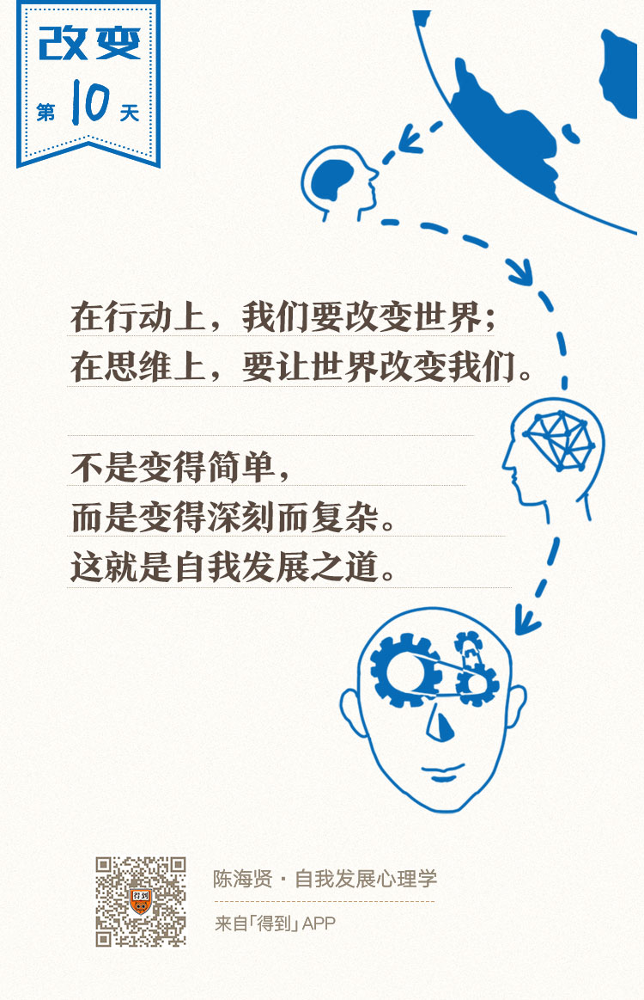

10丨认识心智模式：辨识防御型思维与成长型思维

欢迎来到《自我发展心理学》。
你好，我是陈海贤。
从这讲起，我们进入这门课的第二部分——心智的发展。
如果把人比作是一部复杂的机器，行为是这个机器输出的结果，而心智模式就是驱动机器的底层程序。所以，人要获得持续的发展，不仅需要行为的改变，而且离不开心智模式的有效运转。
那么，什么是心智模式呢？
古希腊哲学家爱比克泰德（Επίκτητος）有句名言：
意思是说，一件事怎么影响我们，不取决于这件事是怎么样的，而取决于我们怎么想它。
每遇到一件事，你就会有一个想法。这些想法看起来散乱无章，但如果把这些想法汇集起来，你就会看到，它们是有规律的。
- 有些人想得乐观些，有些人想得悲观些；
- 有些人习惯从外部找原因，另一些人习惯从自身找原因；
- 有些人习惯想问题是什么，另一些人则习惯想办法是什么。
这些习惯化的想法，我们就把它叫做心智模式。心智模式就是我们组织和加工世界的方式。
心智模式对我们很重要，是因为它决定了我们会如何面对必然会遇到的挫折和失败，我们如何去追求一心想追求的成功和幸福，以及在这个过程中，我们会如何评价我们自己。
自我的发展过程，就是心智模式不断发展和进化的过程。
心智模式的两个作用
心智模式到底怎么影响着我们呢？它至少在两方面起着非常重要的作用：
首先，它塑造了我们的经验，影响了我们的情绪。
相信你也听说过这样的段子：同样的半杯水，有些人看到的是只有半杯水了，所以很焦虑。另外一些人看到的是还剩半杯水，所以很开心。
心智模式让我们对同样的事情有不同的解读，并产生不同的情绪。
既然心智模式的作用是塑造我们的情绪，那么，是不是让人感觉良好的心智模式，就是好的心智模式呢？
如果是这样，那一个人的心智模式一定很积极，就是鲁迅笔下的阿Q。阿Q最会通过自我安慰让自己感觉良好一些。可是我们显然不能认同，阿Q有良好的心智模式。
因为心智模式还有第二个作用：引发行动。
我们的情绪、思维和行动是一体的。积极的思维经常会通过激发有效的行动，来验证它本身的正确性。
如果你觉得一件事你能应付，你就会想各种办法，全力以赴去做，最后，这件事果然做成了，这加深了你“我能应付”的信念。这是一种积极的循环。
反之，如果你觉得自己做不到，你可能就会拖延、想退路、找自己做不到的理由，最后这件事没有完成，这也会加深你“我做不到”的信念。这是一种消极的循环。
对人也是如此。如果你觉得一个人很好，你会去接近他、了解他，最后发现他真的不错。反之，如果你觉得一个人很差，你就会挑剔他、排斥他，最后发现这个人就是不行。
成长型思维和防御型思维
根据能否促进我们跟世界的积极互动的方式，我把心智模型分成两类：一类是积极的成长型心智模型，一类是消极的防御型心智模型。
那么，这两种心智模型是怎么发展起来的呢？
心理学里有一个理论流派，叫自我决定论。这个理论流派获得了很多心理学家的赞同。
这个理论认为，推动人自我发展的内在动机，主要有三个因素：安全感、自主性和胜任感。
安全感主要来自于人际关系，尤其是我们和妈妈的依恋关系。
如果你跟妈妈的依恋关系足够安全，就像一条船知道后面有避风港，行军的队伍知道后面有充足粮草支持，你自然就会对世界发展出好奇，会发展出探索世界的本能。
如果母亲给予孩子的是无条件的接纳和肯定，那孩子所发展出来的探索世界的本能也是自主自发的，不需要考虑别人的评价，也不是为了获得母亲的称赞。
这样，他的自主性就出来了。他不会把挫折当作一种“如果我做得不好，母亲就会嫌弃我”的威胁，而是执着于自己的目标，努力解决问题，把限制和困难当作是有趣的挑战。
在解决问题的过程中，他的能力获得了不断的成长，这样，他的胜任感就发展出来了。慢慢的，他发现自己是有能力的，是能够应付这些挑战，并因此对自己充满自信。
而这种胜任感又会让他不断去寻找新的挑战，解决新的问题。他的自主性会增强，他的安全感来源就会从母亲转为自己，因为他是能够胜任这个工作的，由此形成了一种正性循环。这是一种成长型的心智模型。
反之，如果他的安全感没有得到满足，那他就会陷入另一种心智模型——防御型的心智模型。
他不愿意去探索世界，不愿去面对一些必要的难题。他行动的所有重心，都在想方设法地回避可能的伤害上。他通过缩减自己的活动空间，来获得一种安全感。
为了让世界看上去可控一些，他会非常在意头脑中的规则，以至于看不到现实发生的变化。有时候他也很努力，可这并不是自发的，而是被头脑中“应该如此”的概念驱动的。
他很在意被人赞扬和接纳，所以，别人的一点点批评意见，都会让他焦虑万分。因为太在意别人的评价，他就失去了行为的自主性。
这样，他就陷入另一种循环——不断寻求安全感的循环。而防御型思维，就是阻挡我们走向自我发展最大的思维障碍。
在关于心智发展的11讲里，我们会讨论防御型心智的思维特征和成长型心智的思维特征，并讨论怎么从防御型思维转变到成长型思维。
这一章的第一部分，你会学到防御型思维的三大天王：僵固思维、应该思维和绝对化思维。这三种思维背后都有它们想要防御的东西。
- 僵固思维，防御的是你内心完整自我的形象。它背后所隐含的对能力的观点，也许会出乎你的意料。
- 应该思维，防御的是你内心已有的规则。这些规则既有关于世界和他人的，也有关于你自己的。你会学到这些规则如何破坏了你的自主性，并让你焦虑、抑郁、沮丧。
- 绝对化思维，防御的是可能的伤害。你会学到人们如何用绝对化思维任意扩大防御的范围，并最终让自己寸步难行。
你在日常生活中所遇到的很多烦恼，比如害怕失败、不敢面对挑战、害怕别人的评价，它们背后都有这三种思维的影子，只是你并不知道。
这并不奇怪，因为我们的思维经常是自动运转的，你需要一双外在于自己的眼睛，才能看见它们。而我们的课程，就想提供这样一双外在于自己的眼睛。
这一章的第二部分，你会学到成长型思维的一些特征，并收获一些能帮助你从防御型思维转向成长型思维的有用的思维工具。
我经常把成长型思维比喻成一条河，一条河要流动起来，有两个条件：一个是要有势能，也就是行动的张力。另一个是要有源头活水，也就是要与现实不断地接触。
在这部分里，你会学到怎么建立行动的张力，怎么把行动的张力变成行动的动力，怎么和现实保持密切接触，以及怎么发展出适应现实的思维方式。
最后，我还会用一节很特别的课，跟你讨论思维进化的辩证法。讨论成熟的、有弹性的思维究竟是如何进化出来的。
人是唯一理性的动物。从古希腊的苏格拉底、斯多葛学派，到印度的佛陀、中国的老子、儒教、王阳明的心学，到现代的心理学，都在强调要用理性的力量，来引导自己，让自己过上好的生活。
成长型的心智模型，就是通过改变我们看待世界、他人和自己的角度，发展出对世界更灵活的应对方式，它是人类的智慧之光。
你可以从任何一个做出一番成就的人身上，看到这种理性和智慧的光芒。好在这种理性是可以学习和训练的。
世界在不停地变化，我们的经验也在不停地变化，所以，我们也需要发展出一种能够容纳变化的思维方式。
在行动上，我们要改变世界，可是在思维上，我们要让世界改变我们。不是变得简单，而是变得深刻而复杂。这就是自我发展之道。
接下来的课程，就让我和你一起来学习这种能够帮助我们发展自我的思维模式。
我们下节课见。
